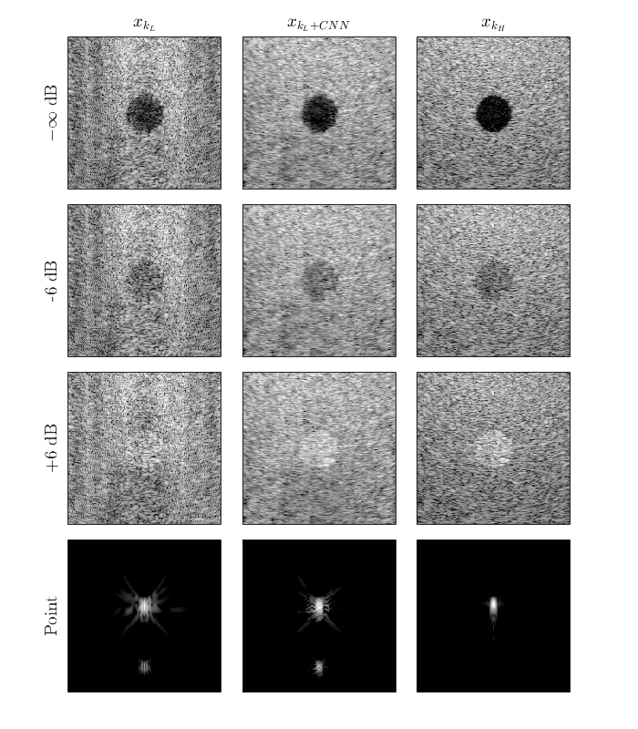

| Paper |
| Code repository |
| Local copy of code |

|
This work explores the use of a deep learning approach to improving ultrasonic plane wave imaging. By training a U-Net based CNN, images of quality comparable to that produced with 20 plane waves were able to be reproduced from data of images produced with 3 plane waves. Qualitatively, improvements in border definition and resolution were observed. Additionally, this network improves preservation of native contrast, but does not show the ability to resolve point targets. These initial findings provide evidence that information captured with many plane waves may be redundant, and the movement towards unblurred ultrafast imaging appears feasible.
|
|
|